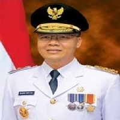

GUBENUR BENGKULU
Dr. H. Rohidin Mersyah, MMA
PENGALAMAN
- 2017 - Sekarang (Plt. Gubernur Bengkulu)
- 2016 - 2017 (Wakil Gubernur Bengkulu)
- 2009 (Kabid Perencanaan Fisik Prasarana Bengkulu Selatan)
- 2010 (Kabid Perencanaan Ekonomi Bappeda Bengkulu Selatan)
- 2010 (Kasubbag Program Kerja Bagian Pembangunan Bengkulu Selatan)
- 2010 (Kepala Poskeswan Kabupaten Bengkulu Selatan)
PENDIDIKAN
- 2002 (S3 Pengelolaan SDA & Lingkungan Institut Pertanian Bogor)
- 2016 (S2 Manajemen Agribisnis Institut Pertanian Bogor)
- 2009 (S1 Kedokteran Hewan Universitas Gajah Mada))
WAKIL GUBENUR BENGKULU
Dr. H. Rosjonsyah, S.I.P., M.Si
PENGALAMAN
- 2021 - Sekarang (Wakil Gubernur Bengkulu)
- 2016-2021 (Bupati Lebong)
- 2010-2015 (Bupati Lebong)
- 2004-2008 (Anggota DPRD Kabupaten Lebong)
PENDIDIKAN
- 2020 (Universitas Bengkulu S3 Ilmu Ekonomi)
- 2012 (S2 Sekolah Tinggi Ilmu Administrasi Mandala Indonesia (STIAMI) )
- 2010 (S1 STISIP Candra Dimuka))
- 1982-1985(SGO Negeri Bengkulu))
- 1979-1982 SMP 2 Kota Madya Bengkulu))
- 1973-1979 (SD 2 Center Kepahiang))